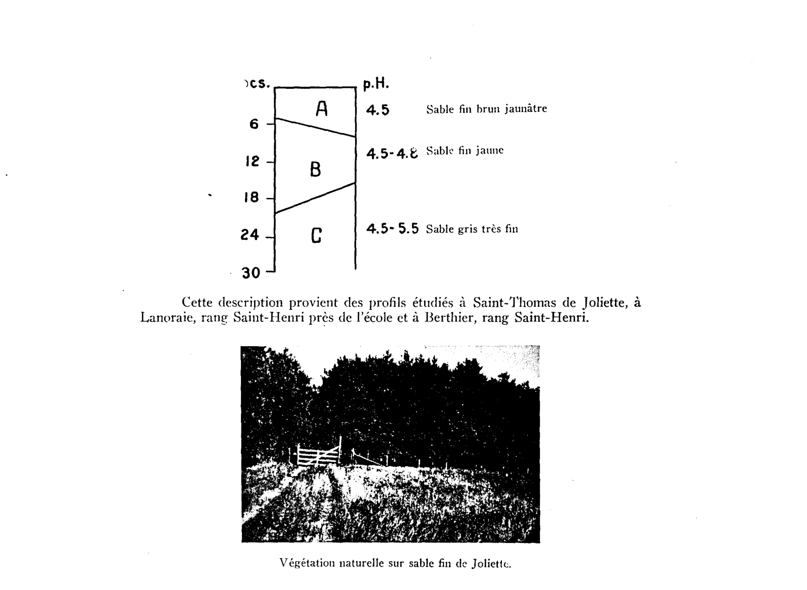
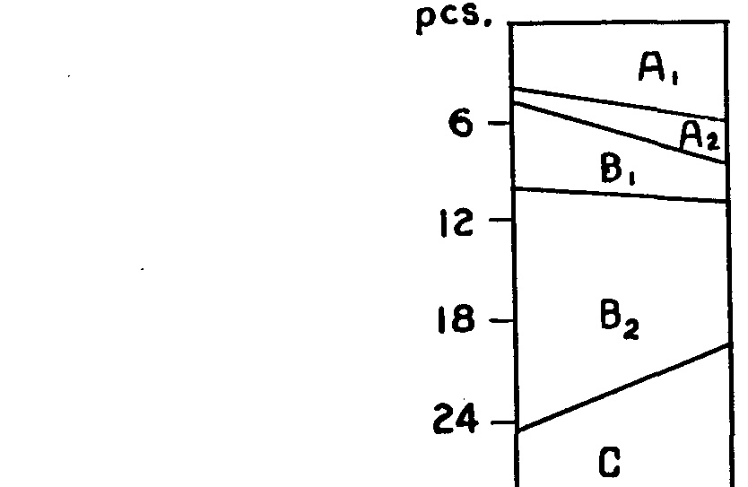
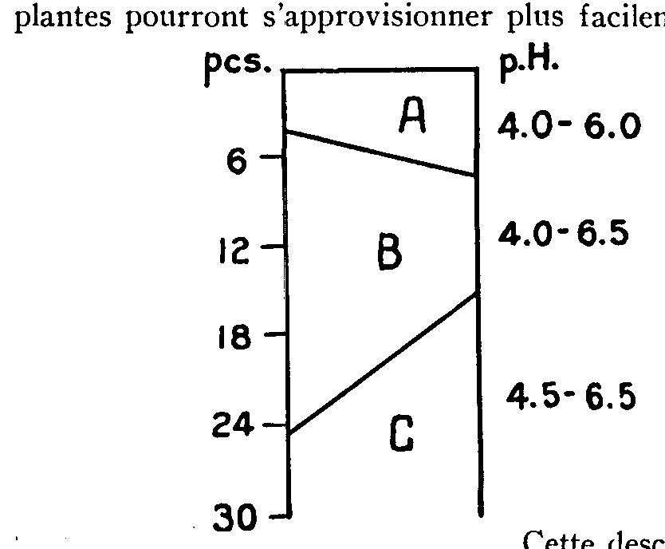
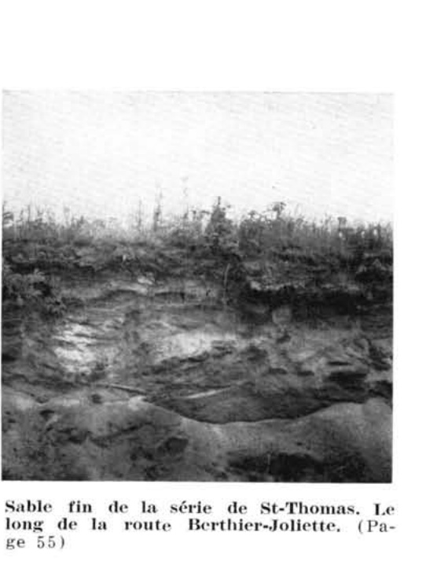

Identification & Caractéristiques Générales
La série Joliette se développe sur un matériau parental constitué de sédiments meubles sablonux, principalement des sables moyens à fins d'origine fluvioglaciaire ou deltaïque, mis en place lors de la fasiès de sédimentation quaternaire régionale. Sur le plan géomorphologique, ces sols occupent des positions topographiques planes à très faiblement inclinées, caractérisées par un relief uni et une absence totale de pierrosité de surface.
Sur le plan morphologique, le profil pédologique présente une texture sablo-limoneuse en surface après mélange des horizons organiques (L-H) et éluviaux (Ae) sous l'action du labour, reposant sur un sous-sol de type podzolique. Le trait distinctif majeur de cette série réside dans la présence, au sein du profil sous-jacent, de discontinuités cimentées discontinues désignées sous le terme d'ortstein, couvrant environ 50 pour cent de l'aire horizontale. Ce ciment argilo-humo-ferrugineux forme une couche très dure à l'état ressuyé mais susceptible de s'attendrir sous l'effet d'une humidité prolongée. Le drainage naturel est imparfait, la perméabilité interne étant modulée par la compacité relative et la distribution discontinue de cet horizon induré qui influence la circulation verticale des eaux hypodermiques et induit une nappe perchée temporaire.
Sur le plan agronomique, les sols de la série Joliette présentent des limitations inhérentes liées à leur régime hydrique imparfait et à la faible rétention naturelle en éléments nutritifs des matrices sableuses. Leur mise en valeur agricole requiert impérativement l'installation d'un réseau de drainage souterrain adéquat pour abaisser la nappe phréatique temporaire et uniformiser les conditions d'enracinement. La gestion de la fertilité exige des apports réguliers d'amendements calcaires pour corriger l'acidité naturelle ainsi que des fertilisations minérales complètes et fractionnées. En raison de leurs propriétés texturales et structurales, ces sols demandent une régie rigoureuse du travail cultural afin de limiter les risques d'érosion éolienne et hydrique, et sont généralement dévolus aux grandes cultures, aux productions fourragères ou au maintien de peuplements boisés.
Classification Taxonomique & Environnement Pédologique
| Ordre Pédologique | Podzolique |
|---|---|
| Grand Groupe (SCSS) | Podzol humo-ferrique |
| Sous-Groupe Taxonomique | Podzol humo-ferrique à orstein gleyifié |
| Famille Pédologique | Sableuse, mixte sableux, acide |
| Mode de Dépôt Parental | Marin |
| Classe de Drainage Naturel | Imparfaitement drainé |
| Régime Thermique & Humidité | Frais / Perhumide |
Description Morphologique du Profil Type
Séquences génétiques des horizons pédologiques caractérisant le profil type représentatif de la série Joliette :
Profil naturel (vierge) — Comté de Hull
✓ Source : Comté de Hull — Page 71Couleur Munsell : 10YR 2/1
Structure & Consistance : Polyédrique à granulaire
Description morphologique : Humus noir (10YR 2/1), brut; pH 3.6 à 4.6.
Couleur Munsell : 2.5Y 7/2
Structure & Consistance : Monogranulaire
Description morphologique : Sable à sable loameux gris pâle (2.5Y 7/2), éluvié; structure monogranulaire; pH 4.0 à 4.5.
Couleur Munsell : 10YR 2/1
Structure & Consistance : Polyédrique à granulaire
Description morphologique : Sable à sable loameux noir rougeâtre (10YR 2/1); très dur; se brisant en plaques de 5 à 6 mm. (¼″) d'épaisseur et de 2.5 cm. (1″) de diamètre; ces plaques se fragmentent à nouveau en minces lamelles d'environ 2 mm. (1/12″) d'épaisseur et de 1 cm. (2/5″) de diamètre; rayures ou taches plus pâles que la masse; peu perméable; impénétré par les racines; pH 4.6 à 5.4.
Couleur Munsell : 10YR 5/8 (matrice), 2.5YR 3/6 (marbrures)
Structure & Consistance : Polyédrique à granulaire
Description morphologique : Sable à sable loameux brun jaunâtre (10YR 5/8); marbrures grossières et contrastantes rouge foncé à brun rougeâtre (2.5 YR 3/6-4/4) et de gris brunâtre pâle ou de brun jaunâtre pâle (2.5Y 6/2-6/4); pH 4.9 à 5.6.
Couleur Munsell : Non précisée
Structure & Consistance : Polyédrique à granulaire
Description morphologique : Sable gris olive et olive, saturé d'eau de façon presque permanente; très tassé, massif et ferme en place; pH 5.6 à 6.0.
Profil cultivé (agricole) — Comté de Joliette
✓ Source : Comté de Joliette — Page 36Couleur Munsell : 10YR 4/1
Structure & Consistance : Granulaire
Description morphologique : Loam sableux, structure granulaire, gris foncé (10YR 4/1), friable. pH: 5.3.
Couleur Munsell : 10YR 6/1
Structure & Consistance : Granulaire
Description morphologique : Loam sableux à loam, structure granulaire, gris (10YR 6/1), consistance friable. pH: 5.1.
Couleur Munsell : 10YR 5/4, 10YR 4/4, 2.5Y 7/2
Structure & Consistance : Feuilletée
Description morphologique : Loam à loam sableux, structure feuilletée, brun jaune (10YR 5/4) à brun jaune foncé (10YR 4/4) avec taches de gley de couleur gris clair (2.5Y 7/2), consistance friable. pH: 5.5 - 5.9.
Couleur Munsell : 10YR 4/4, 10YR 6/2
Structure & Consistance : Feuilletée
Description morphologique : Loam argileux à argile, structure feuilletée, brun jaune foncé (10YR 4/4) avec taches de gley de couleur gris brun clair (10YR 6/2), consistance plastique. pH: 5.7 - 6.3.
Profil naturel (vierge) — Comté de Joliette
✓ Source : Comté de Joliette — Page 40Couleur Munsell : 10YR 5/2
Structure & Consistance : Polyédrique à granulaire
Description morphologique : Sable fin, sans structure, brun gris (10YR 5/2), meuble. pH: 5.5.
Couleur Munsell : 7.5YR 4/4
Structure & Consistance : Polyédrique à granulaire
Description morphologique : Sable fin, sans structure, brun foncé (7.5YR 4/4), meuble. pH: 5.9.
Couleur Munsell : 2.5Y 7/4
Structure & Consistance : Polyédrique à granulaire
Description morphologique : Sable fin, sans structure, jaune pâle (2.5Y 7/4), ferme. pH: 6.0.
Profil naturel (vierge) — Comté de Joliette
✓ Source : Comté de Joliette — Page 54Couleur Munsell : Non précisée
Structure & Consistance : Polyédrique à granulaire
Description morphologique : Débris de feuilles.
Couleur Munsell : 5YR 2/1, 2.5Y 2/2
Structure & Consistance : Polyédrique à granulaire
Description morphologique : Sable fin à moyen, sans structure, noir (5YR 2/1) à rouge très sombre (2.5Y 2/2), meuble. pH: 4.2 - 4.3.
Couleur Munsell : 2.5Y 8/2, 10YR 6/1
Structure & Consistance : Polyédrique à granulaire
Description morphologique : Sable fin à moyen, sans structure, blanc (2.5Y 8/2) à gris (10YR 6/1), légèrement cimenté. pH: 4.6 - 4.8.
Couleur Munsell : 10YR 2/2, 2.5YR 3/6, 2.5Y 6/6
Structure & Consistance : Polyédrique à granulaire
Description morphologique : Sable fin à moyen, sans structure, brun foncé (10YR 2/2) à rouge foncé (2.5YR 3/6) et taches jaune olive (2.5Y 6/6), légèrement cimenté. pH: 5.7 - 5.8.
Couleur Munsell : 2.5YR 4/8, 2.5Y 5/6
Structure & Consistance : Polyédrique à granulaire
Description morphologique : Sable fin à moyen, sans structure, rouge (2.5YR 4/8), avec plaques de couleur olive clair (2.5Y 5/6), cimenté. pH: 6.5 - 6.6.
Couleur Munsell : 2.5Y 5/6, 5YR 5/6
Structure & Consistance : Polyédrique à granulaire
Description morphologique : Sable fin à moyen, sans structure, olive clair (2.5Y 5/6) avec traînées rouge jaune (5YR 5/6), cimenté. pH: 6.9.
Profil cultivé (agricole) — Comté de Joliette
✓ Source : Comté de Joliette — Page 59Couleur Munsell : 10YR 2/2
Structure & Consistance : Finement granuleuse
Description morphologique : Loam sableux, structure finement granuleuse, brun très foncé (10YR 2/2), consistance friable. pH: 5.8-6.5.
Couleur Munsell : 5Y 5/2, 5Y 5/3, 5YR 4/6, 5YR 5/6
Structure & Consistance : Massive
Description morphologique : Argile, structure massive, gris olive (5Y 5/2) à olive (5Y 5/3) avec taches brun rouge jaune (5YR 4/6) à rouge jaune (5YR 5/6), consistance très plastique. pH: 6.5-6.8.
Couleur Munsell : 5Y 5/3, 7.5YR 4/4, 10YR 5/4
Structure & Consistance : Massive
Description morphologique : Argile, structure massive, olive (5Y 5/3) avec taches brun foncé (7.5YR 4/4) à brun jaune (10YR 5/4), consistance très plastique. pH: 6.6 - 7.2.
Profil cultivé (agricole) — Comté de Joliette
✓ Source : Comté de Joliette — Page 81Couleur Munsell : 10YR 4/3
Structure & Consistance : Polyédrique à granulaire
Description morphologique : Loam, sans structure, gris très foncé (10YR 4/3), consistance friable. pH: 5.6.
Couleur Munsell : 10YR 4/3
Structure & Consistance : Polyédrique à granulaire
Description morphologique : Loam, sans structure, brun foncé (10YR 4/3), consistance friable. pH: 5.6.
Couleur Munsell : 2.5Y 5/2
Structure & Consistance : En mottes
Description morphologique : Argile, structure en mottes, brun gris (2.5Y 5/2), consistance plastique. pH: 5.7.
Profil naturel (vierge) — Comté de Joliette
✓ Source : Comté de Joliette — Page 89Couleur Munsell : 10YR 4/3, 10YR 4/5
Structure & Consistance : Polyédrique à granulaire
Description morphologique : Loam sableux à sable grossier, sans structure, brun gris (10YR 4/3) à brun foncé (10YR 4/5), meuble. pH : 5.2 — 5.6.
Couleur Munsell : 5YR 3/4
Structure & Consistance : Polyédrique à granulaire
Description morphologique : Sable graveleux, sans structure, brun rouge foncé (5YR 3/4), meuble. pH : 5.5 — 5.7.
Couleur Munsell : 10YR 5/4
Structure & Consistance : Polyédrique à granulaire
Description morphologique : Sable graveleux, sans structure, brun jaune (10YR 5/4), meuble. pH : 5.5 — 5.7.
Couleur Munsell : 5Y 7/3
Structure & Consistance : Polyédrique à granulaire
Description morphologique : Sable graveleux, sans structure, jaune pâle (5Y 7/3), meuble. pH : 5.5 — 5.8.
Couleur Munsell : 5Y 6/3
Structure & Consistance : Polyédrique à granulaire
Description morphologique : Sable graveleux, sans structure, olive pâle (5Y 6/3), meuble. pH : 5.5 — 5.7.
Profil naturel (vierge) — Comté de Joliette
✓ Source : Comté de Joliette — Page 91Couleur Munsell : 7.5YR 4/2
Structure & Consistance : Polyédrique à granulaire
Description morphologique : Loam sablo-graveleux, sans structure, brun foncé (7.5YR 4/2). pH: 5.4.
Couleur Munsell : 2.5Y 8/2
Structure & Consistance : Polyédrique à granulaire
Description morphologique : Loam sablo-graveleux, blanc (2.5Y 8/2). pH: 5.2.
Couleur Munsell : 5YR 4/4
Structure & Consistance : Polyédrique à granulaire
Description morphologique : Loam sablo-graveleux, sans structure, brun rouge (5YR 4/4), concrétionné. pH: 5.6.
Couleur Munsell : 10YR 5/6
Structure & Consistance : Polyédrique à granulaire
Description morphologique : Loam sablo-graveleux, sans structure, brun jaune (10YR 5/6), concrétionné. pH: 5.6.
Couleur Munsell : 10YR 5/8
Structure & Consistance : Polyédrique à granulaire
Description morphologique : Sable graveleux, sans structure, jaune olive (10YR 5/8), concrétionné. pH: 5.5.
Profil cultivé (agricole) — Comté de Joliette
✓ Source : Comté de Joliette — Page 95Couleur Munsell : 10YR 3/1
Structure & Consistance : Polyédrique à granulaire
Description morphologique : Sable loameux à sable grossier, sans structure, gris très foncé (10YR 3/1), meuble. pH: 5.3.
Couleur Munsell : 5YR 4/2
Structure & Consistance : Polyédrique à granulaire
Description morphologique : Sable graveleux, sans structure, gris rouge (5YR 4/2), meuble. pH: 5.5.
Couleur Munsell : 5YR 3/3
Structure & Consistance : Polyédrique à granulaire
Description morphologique : Sable graveleux, sans structure, brun rouge foncé (5YR 3/3), meuble. pH: 5.5.
Couleur Munsell : 5Y 5/3
Structure & Consistance : Polyédrique à granulaire
Description morphologique : Sable grossier à gravier fin, sans structure, olive (5Y 5/3), meuble. pH: 6.0.
Profil naturel (vierge) — Comté de Joliette
✓ Source : Comté de Joliette — Page 105Couleur Munsell : Non précisée
Structure & Consistance : Polyédrique à granulaire
Description morphologique : Débris de feuilles non décomposées.
Couleur Munsell : 10YR 4/3
Structure & Consistance : Granulaire
Description morphologique : Loam sablo-graveleux à sable très graveleux, structure granulaire, brun foncé (10 YR 4/3), friable, pH: 5.4 - 5.7.
Couleur Munsell : 10YR 7/1, 5Y 5/1
Structure & Consistance : Granulaire
Description morphologique : Loam sablo-graveleux à sable très graveleux, structure granulaire, gris clair (10 YR 7/1) à gris (5Y 5/1), friable, pH: 5.4.
Couleur Munsell : 7.5Y 4/4, 10YR 4/4
Structure & Consistance : Granulaire
Description morphologique : Loam sablo-graveleux à sable très graveleux, structure granulaire, brun foncé (7.5Y 4/4) à brun jaune foncé (10YR 4/4), friable, pH: 5.6.
Couleur Munsell : 10YR 5/4
Structure & Consistance : Granulaire
Description morphologique : Sable très graveleux, structure granulaire, brun jaune (10YR 5/4), friable, pH: 5.8 - 5.9.
Couleur Munsell : 5Y 7/3, 2.5Y 5/4
Structure & Consistance : Faiblement lamellaire
Description morphologique : Till de sable loamo-graveleux à loam sablo-graveleux, structure faiblement lamellaire, jaune pâle (5Y 7/3) à olive clair (2.5Y 5/4), consistance compacte, pH: 5.6 - 6.1.
Profil représentatif — Comté de Joliette
✓ Source : Comté de Joliette — Page 5Couleur Munsell : Non précisée
Structure & Consistance : Friable
Description morphologique : Texture : Sable; Brun; structure Friable
Couleur Munsell : Non précisée
Structure & Consistance : Friable
Description morphologique : Texture : Sable très fin; Rougeâtre; structure Friable
Couleur Munsell : Non précisée
Structure & Consistance : Friable
Description morphologique : Texture : Sable fin; Gris; structure Friable
Profil forestier / boisé — Comté de L'assomption
✓ Source : Comté de L'assomption — Page 55Couleur Munsell : 10YR 2/1
Structure & Consistance : Polyédrique à granulaire
Description morphologique : Humus noir (10YR 2/1); brut; pH 3.6 à 4.6.
Couleur Munsell : 2.5Y 7/2
Structure & Consistance : Monogranulaire
Description morphologique : Sable à sable loameux gris pâle (2.5Y 7/2); éluvié; structure monogranulaire; pH 4.0 à 4.5.
Couleur Munsell : 10YR 2/1
Structure & Consistance : Polyédrique à granulaire
Description morphologique : Sable à sable loameux noir rougeâtre (10YR 2/1); très dur; se brisant en plaques de 5 à 6 mm. (¼ po.) d'épaisseur et de 2.5 cm. (1 po.) de diamètre; ces plaques se fragmentent à nouveau en minces lamelles d'environ 2 mm. (1/12 po.) d'épaisseur et de 1 cm. (2/5 po.) de diamètre; rayures ou taches plus pâles que la masse; peu perméable; impénétré par les racines; pH 4.6 à 5.4.
Couleur Munsell : 10YR 5/8 (matrice), 2.5YR 3/6 (marbrures)
Structure & Consistance : Polyédrique à granulaire
Description morphologique : Sable à sable loameux brun jaunâtre (10YR 5/8); mouchetures grossières et contrastantes rouge foncé à brun rougeâtre (2.5YR 3/6-4/4) et de gris brunâtre pâle ou de brun jaunâtre pâle (2.5Y 6/2-6/4); pH 4.9 à 5.6.
Couleur Munsell : Non précisée
Structure & Consistance : Polyédrique à granulaire
Description morphologique : Substratum argileux; imperméable et massif; pH 6.0 à 7.2.
Profils Photographiques & Planches de Terrain
Documents iconographiques, figures pédologiques et coupes de terrain documentées dans les mémoires d'inventaire pour de la série Joliette :




Propriétés Physico-Chimiques & Analyses de Laboratoire
| Horizon | Texture | pH (H₂O) | M.O. % | C.E.C. (meq/100g) | Sable % | Limon % | Argile % | Ca éch. | Mg éch. | K éch. | Cond. hydr. (cm/h) | Densité |
|---|---|---|---|---|---|---|---|---|---|---|---|---|
| 1 | Sable loameux | 5.9 | 2.53 | 12.0 | 85.0 | 12.0 | 3.0 | 2.94 | 0.07 | 0.03 | 2.5 | None |
| 2 | Sable | 5.9 | 1.6 | 10.5 | 91.0 | 6.0 | 3.0 | 1.34 | 0.05 | 0.01 | 2.55 | None |
Particularités Régionales, Phases & Variantes Pédologiques
Déclinaisons régionales, faciès texturaux, phases d'érosion ou de pierrosité et variantes cartographiées par étude pour de la série Joliette :
| Étude Régionale | Symbole | Appellation / Phase / Variante | Différenciation avec la série type (Analyse pédologique) |
|---|---|---|---|
| Comté de Chambly | SB3 |
Saint-Blaise loam | Modalité modale de référence (type de base de la série). |
SB3h |
Saint-Blaise loam humifère | Phase humifère enrichie en matière organique superficielle. | |
SB4 |
Saint-Blaise loam limono-argileux | Faciès argileux plus lourd et compact que le loam de référence. | |
SB4b |
Saint-Blaise loam limono-argileux 3-8 % de pente | Faciès argileux plus lourd et compact que le loam de référence. | |
SB4m |
Saint-Blaise loam limono-argileux mince | Phase mince sur substrat rocheux (< 50 cm); Faciès argileux plus lourd et compact que le loam de référence. | |
SB4p |
Saint-Blaise loam argileux pierreux | Phase pierreuse (abondance de cailloux et blocs en surface); Faciès argileux plus lourd et compact que le loam de référence. | |
SB5 |
Saint-Blaise argile limoneuse | Faciès argileux plus lourd et compact que le loam de référence. | |
SBa3 |
Saint-Blaise variante non calcaire loam | Variante décarbonatée (non calcaire) à réaction plus acide. | |
SBa4 |
Saint-Blaise variante non calcaire loam limono-argileux | Variante décarbonatée (non calcaire) à réaction plus acide; Faciès argileux plus lourd et compact que le loam de référence. | |
| Comté de Châteauguay | B |
Saint-Blaise loam argileux | Faciès argileux plus lourd et compact que le loam de référence. |
| Comté de Iberville | SB |
Saint-Blaise argileux sur till loameux fin alcalin | Phase peu profonde sur till; Faciès argileux plus lourd et compact que le loam de référence. |
| Comté de Laprairie | SB3 |
Saint-Blaise loam | Conforme à la série type de référence (caractéristiques texturales et drainage identiques). |
SB3h |
Saint-Blaise loam humifère | Phase humifère enrichie en matière organique superficielle. | |
SB3p |
Saint-Blaise loam légèrement à modérément pierreux | Phase légèrement à modérément pierreuse (obstruction mécanique modérée). | |
SB4 |
Saint-Blaise loam limono-argileux | Faciès argileux plus lourd et compact que le loam de référence. | |
SB4p |
Saint-Blaise loam argileux légèrement à modérément pierreux | Phase légèrement à modérément pierreuse (obstruction mécanique modérée); Faciès argileux plus lourd et compact que le loam de référence. | |
SB5 |
Saint-Blaise argile limoneuse | Faciès argileux plus lourd et compact que le loam de référence. | |
| Les sols de l’Île de Montréal | Bl |
Saint-Blaise loam | Conforme à la série type de référence (caractéristiques texturales et drainage identiques). |
Bl-a |
Saint-Blaise argile mince | Phase mince sur substrat rocheux (< 50 cm); Faciès argileux plus lourd et compact que le loam de référence. | |
| Comté de Napierville | SB |
Saint-Blaise | Conforme à la série type de référence (caractéristiques texturales et drainage identiques). |
SBh |
Saint-Blaise humifère | Phase humifère enrichie en matière organique superficielle. | |
| Comté de Rouville | SB3 |
Saint-Blaise loam | Conforme à la série type de référence (caractéristiques texturales et drainage identiques). |
SB4 |
Saint-Blaise loam limono-argileux | Faciès argileux plus lourd et compact que le loam de référence. | |
SB4p |
Saint-Blaise loam limono-argileux légèrement à modérément pierreux | Phase légèrement à modérément pierreuse (obstruction mécanique modérée); Faciès argileux plus lourd et compact que le loam de référence. | |
| Comté de Saint-jean | SB |
Saint-Blaise loam | Conforme à la série type de référence (caractéristiques texturales et drainage identiques). |
SBbp |
Saint-Blaise loam 3-8% de pente légèrement à modérément pierreux | Phase légèrement à modérément pierreuse (obstruction mécanique modérée). | |
| Comté de Verchères | SB4 |
Saint-Blaise loam limono-argileux | Faciès argileux plus lourd et compact que le loam de référence. |
SB5 |
Saint-Blaise argile limoneuse | Faciès argileux plus lourd et compact que le loam de référence. | |
SB5m |
Saint-Blaise argile limoneuse mince | Phase mince sur substrat rocheux (< 50 cm); Faciès argileux plus lourd et compact que le loam de référence. | |
| Comté de Hull | Jo |
Joliette sable | Faciès sableux très filtrant et pauvre en éléments nutritifs vis-à-vis du loam de référence; Drainage imparfaitement drainé (distinct du drainage de référence mal drainé); Classification sous-groupe : Podzol humo-ferrique à orstein gleyifié (vis-à-vis de Gleysol humique orthique). |
| Comté de Joliette | Jo |
Joliette sable fin à sable | Faciès sableux très filtrant et pauvre en éléments nutritifs vis-à-vis du loam de référence; Drainage imparfaitement drainé (distinct du drainage de référence mal drainé); Classification sous-groupe : Podzol humo-ferrique à orstein gleyifié (vis-à-vis de Gleysol humique orthique). |
| Comté de L'assomption | Jo |
Joliette sable | Faciès sableux très filtrant et pauvre en éléments nutritifs vis-à-vis du loam de référence; Drainage imparfaitement drainé (distinct du drainage de référence mal drainé); Classification sous-groupe : Podzol humo-ferrique à orstein gleyifié (vis-à-vis de Gleysol humique orthique). |
Distribution Pédo-Paysagère & Représentativité Cartographique (Couverture PPS 2026)
- Péningue sable (PNG) — co-occurrente dans 21 polygone(s)
- Achigan sable très fin à sable limoneux (AHG) — co-occurrente dans 7 polygone(s)
- Tourbes (TOF) — co-occurrente dans 3 polygone(s)
Aptitudes Agronomiques, Hydropédologie & Conservation des Sols
Indicateurs Hydropédologiques & Vulnérabilité à l'Érosion (BDHP 2026)
Interprétation BDHP : Potentiel de ruissellement modérément élevé. Faible taux d'infiltration, présence d'horizons ralentissant le drainage descendant.
Classement selon l'Inventaire des Terres du Canada (ITC / CLI) : Classe 3w.
- Potentiel agricole : Terroir adapté aux cultures régionales selon la texture dominante et la régie de drainage.
- Contraintes majeures : Imparfaitement drainé. Risque d'engorgement temporaire ou d'excès d'eau printanier.
- Gestion & Aménagement : Drainage souterrain ou superficiel préconisé sur les terres planes. Chaulage et apport organique régulier selon les bilans agronomiques.
- Cultures adaptées : Grandes cultures (maïs, soya, céréales), prairies fourragères et cultures maraîchères selon le contexte géomorphologique.